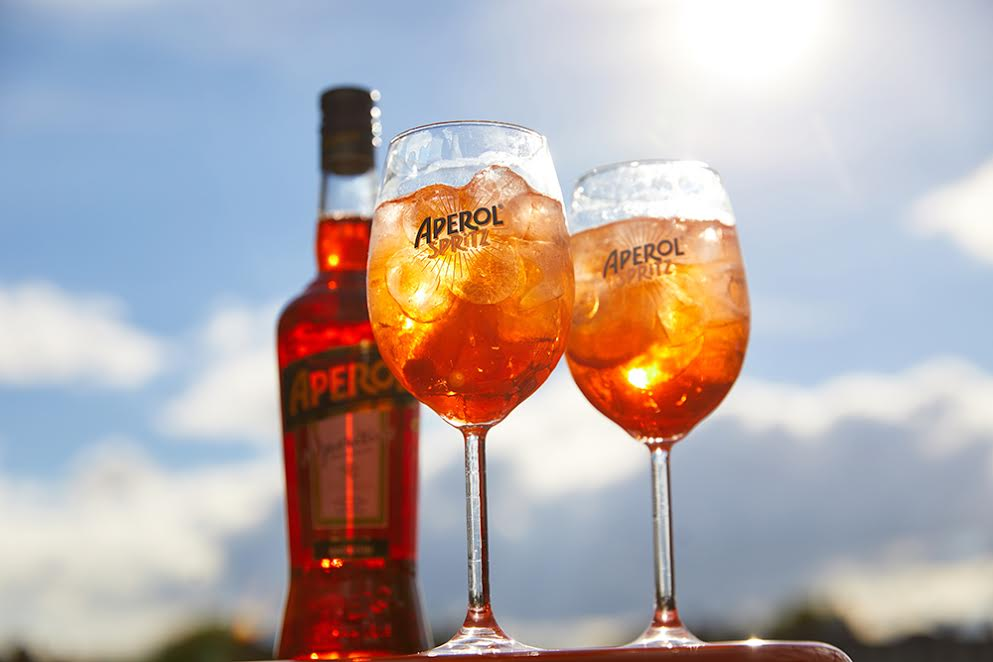

A Taste of Italy
Italian cuisine has evolved and changed following the evolution and the changes of Italy itself throughout centuries of wars, cultural mutations, and contacts: it’s a history as rich, colorful, and fascinating as the most amazing of recipes.
Il Alcool

A drink of choice for many Italians, and now a drink enjoyed around the world, an Aperol Spritz is a refreshing and palate pleasing drink. It mixes Aperol with Prosecco and tonic water to make a bright orange, fizzy spritz.